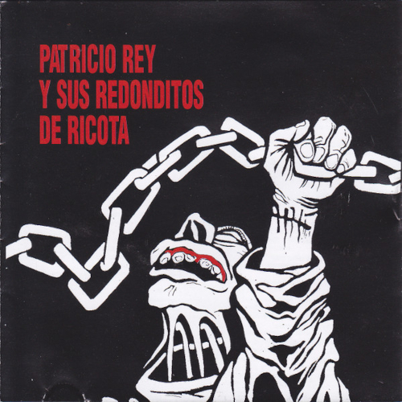
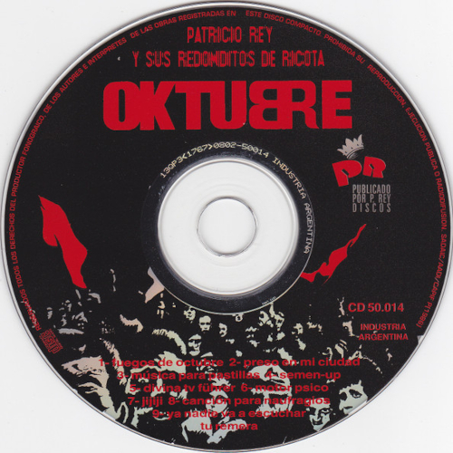
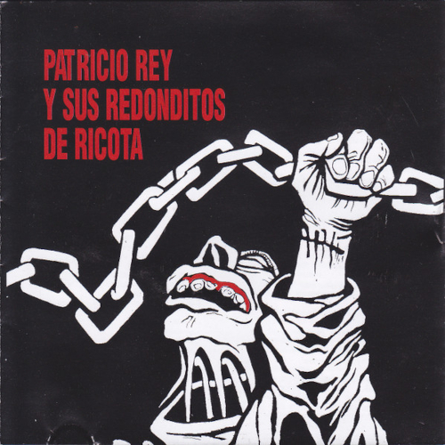
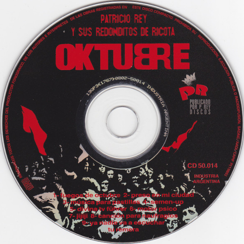

Oktubre
Oktubre es el segundo álbum de estudio del grupo de rock argentino Patricio Rey y sus Redonditos de Ricota. Fue editado en octubre de 1986. Grabado a mediados de 1986, el álbum se caracteriza por un sonido que incorporó influencias del new wave y el post-punk (lo cual significó un cambio con respecto a su álbum anterior, Gulp!), y por su narrativa con elementos distópicos,[2] inspirada por las revoluciones sociales históricas y el contexto bélico internacional de la Guerra Fría, así como también del escenario político de Argentina en el período de la vuelta a la democracia. El arte de tapa, diseñado por el artista plástico Rocambole, está inspirado en la Revolución rusa de 1917. En 2007, la versión argentina de la revista Rolling Stone situó a Oktubre en el puesto n.º 4 en su lista de Los 100 mejores álbumes del rock argentino.
En 1986, unos meses después de haber lanzado su primer álbum Gulp!, la banda aprovechó el portaestudio de Gonzalo Palacios, compuso nuevos temas y buceó en un nuevo sonido. Por entonces, a la hora de encarar la grabación definitiva, sus ahorros les permitieron ir a un estudio como Panda y ahí registrar Oktubre. Las grabaciones se realizaron en dos meses, entre agosto y septiembre de 1986. El sonido de la banda dio un cambio total con respecto al trabajo anterior. El resultado fue un estilo frío y crítico, utilizando un bajo eléctrico con influencia pop y una combinación muy creativa de sonidos y tonos menores, además de la colaboración de Daniel Melero (por entonces miembro de Los Encargados) en teclados y Claudio Fernández (del grupo Don Cornelio y la Zona) en percusiónes
| Oktubre | ||
|---|---|---|
| Albúm de estudio | ||
| Publicación | 4 de octubre de 1986 | |
| Grabación | Agosto - septiembre de 198 | |
| Estudio | Estudios Tubal (Bs.As) | |
| Género(s) | Post-Punk, Rock and Roll, Hard Rock | |
| Formato | CD, Vinilo, Cassette, Digital | |
| Duración | 41:08 | |
| Discográfica | Del Cielito Records | |
| Productor(es) | Patricio Rey y sus Redonditos de Ricota | |
| Ventas | 180.000 | |
Listado de canciones
- Fuegos de octubre
- Preso en mi ciudad
- LMúsica para pastillas
- Semen-Up
- Divina Tv. Führer
- Motor psico
- Jijiji
- Canción para naufragios
- Ya nadie va a escuchar tu remera
- Rato molhado (4:12)
 



Galería de imágenes